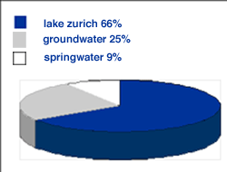

briefing


|
BRIEFING PART ONE The metropolitan area of Zürich is located in the Swiss midlands. Water is not a scarce resource due to the lake of Zürich which accounts for 66% of the city's water consumption (see Figure 1). Per capita water consumption is above the European level but has been decreasing during the last decade. There are no pressing environmental problems regarding present water quality and supply. However, the political authorities face the increasing dissatisfaction of citizens and NGOs with the strategy for technical and end-of-pipe solutions to environmental issues. |
next page
Figure 1: Sources for Zurich City's Water Consumption

|